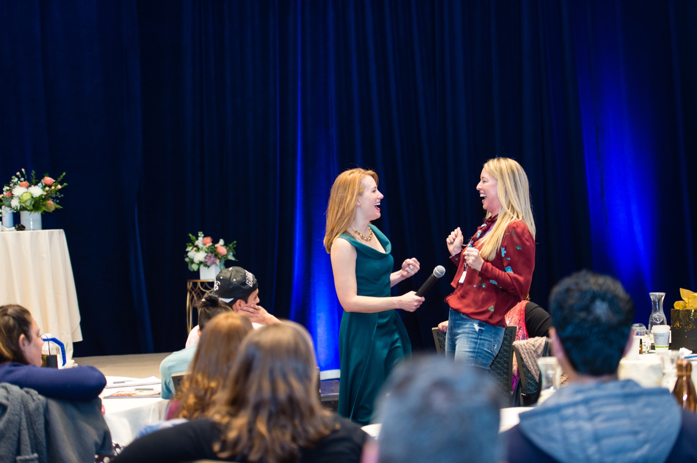

Your intuition already knows what's next for you, but you're still trying to figure it out.
Maybe you're in the middle of a big transition… the role that no longer fits, the life that looked right and doesn't feel like yours anymore. If you've done the work and you're still stuck, knowing more isn't going to get you there; this is about your alignment, and your intuition has been nudging you for quite some time. Let me help you get there and fulfill the path you're meant to be on.
I feel like I have been looking for this program my whole life!
Does any of this sound familiar?
Your intuition keeps telling you something has to change, but you can't seem to make sense of it.
The nudges are real; you just haven't been shown how to trust them yet.
You probably know what you need to do, but you're still not doing it.
Some results are there, but it feels harder than it needs to be.
The money comes in, but it never feels like enough.
That feeling was never about the number, which is why earning more hasn't changed it.
Life looks good on paper, but it still feels hard.
Everything you've tried taught you how to manage it; nobody showed you it can change.
If you're at a crossroads…
…in your life
Leaving the 9 to 5 to build something of your own, a marriage that may no longer fit, a body asking you to slow down. Divine Self Mastery, a year you dedicate to yourself, gives you the practice and the people to move.
See Divine Self Mastery…in your business
Revenue has plateaued, and decisions take more out of you than they should. Established founders work with me privately for a year, and the business moves when the founder's pattern clears.
About private workWhy it hasn't held
Your life organizes itself around what you're aligned in…
That's why more effort only gets you more of the same. When we clear the root pattern at the energy level, your thoughts, feelings and actions line up with the life you're choosing. Nothing is wrong with you; you were handed tools for the surface, and nobody showed you how to reach the root. See how the method works.
I didn't even know it was possible to not have a pattern anymore.
Hi, I'm Tamara.
I've been exactly where you are. At 29, I had it all: a big bank account, four properties and the number one sales spot at my company, and I still felt empty inside.
I became so obsessed with growth that I invested $150,000 in myself, completed more than 53 courses and worked with masters around the world.
It wasn't until I started working with energy that my life shifted, because when you clear something at the root, everything else moves with it.
The planet is waking up, and so are you.
You're being pulled toward something bigger than yourself, and you've felt it for a while now. Welcome, my friend; you're one of the first in a change that's happening everywhere at once.
Get a feel for the work first…
Most people start by watching a few videos, listening to a conversation or sitting in on a free meditation.
How deep the work can go…
I work energetically and intuitively, at the level underneath strategy, where the default patterns live that make or break your success; when we clear them, your work moves, and so does the rest of your life. And if you have intuitive or psychic gifts, this is where they finally make sense.
As a retired type A perfectionist, I built the quickest, most efficient way I know to get you from point A to point B, without all the fluff: a system that trains you to work in the energetic realm yourself, so you leave knowing how to clear what comes up for the rest of your life.

I have a MA in clinical psychology, own and operate a successful business, and I've never met anyone as skilled at digging to root causes buried in the human psyche and articulating them in a comprehensible manner.
I had 10 years of personal growth and programs but I was still on the roller coaster. It was finally tending to my nervous system that changed everything. I do more than ever but it doesn't feel like it at all.